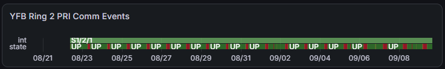
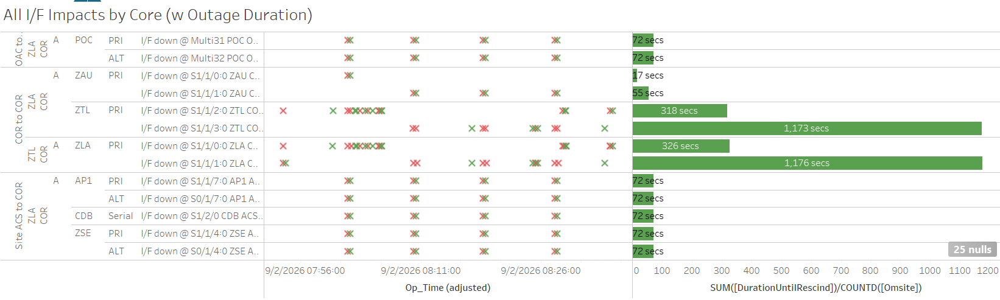

Weekly Highlights 20260902-20260909
SSM-WAAS-065 / DFO-2 Cutover Activities
SSM-WAAS-065 was released on 2/12/26 to upgrade the WAAS subsystems by performing the following hardware changes:
- Remove Legacy PCUs / Replace with new Power Distribution Units (PDUs) and DC Power Supplies (DCPS)
- Remove Legacy KVMs / Replace with new form-fit-function KVM
The DFO-2 Field Test Activities to implement limited operational capability (LOC) of L5 messaging are also being scheduled.
DFO-2 activities will be delayed...
4 WRS sites remain
| Target Cutover Date | Site | Site Type | Outage? (Y/N) |
|---|---|---|---|
| 9/15/2026 | HNL - Honolulu AFSS | WRS2 | N |
| 9/30/2026 | MTP - Tapachula | WRS5 | Y |
| 10/2/2026 | MPR - Puerto Vallarta | WRS5 | Y |
| 10/7/2026 | MSD - San Jose Del Cabo | WRS5 | Y |
- We will not take an outage at some WRS sites to avoid service area impacts.
- Final crate to HNL delivered 9/4
- Beginning coordination to return legacy items from Canada...
| Site | Site Type | Upgrade Start | Upgrade Complete |
|---|---|---|---|
| POC - San Diego TRACON | OM | 2/19/2026 18:54 | 2/19/2026 21:28 |
| ZTL - Atlanta ARTCC | WMS / WCN | 2/19/2026 22:05 | 2/20/2026 2:02 |
| ZLA - Los Angeles ARTCC | WMS / WCN | 2/24/2026 16:24 | 2/24/2026 19:56 |
| ZDC - Washington, D.C. ARTCC | WMS / WCN | 2/26/2026 14:04 | 2/26/2026 19:26 |
| ZAU - Chicago ARTCC | WCN | 3/3/2026 14:15 | 3/3/2026 16:22 |
| NOC - Warrenton ATCSCC | OM | 3/3/2026 16:47 | 3/3/2026 19:21 |
| SZ1 - Santa Paula | SGS | 3/4/2026 17:08 | 3/4/2026 20:59 |
| CM1 - South Mountain | SGS | 3/5/2026 16:45 | 3/6/2026 3:04 |
| AP1 - Napa | SGS | 3/10/2026 15:15 | 3/10/2026 18:27 |
| DX1 - Southbury | SGS | 3/12/2026 13:06 | 3/12/2026 18:33 |
| BR1 - Brewster (S97A) | SGS | 3/25/2026 16:03 | 3/25/2026 21:46 |
| BR2 - Brewster (S97B) | SGS | 3/26/2026 15:54 | 3/26/2026 21:09 |
| ZOA - Oakland ARTCC | WRS2 | 3/31/2026 16:31 | 4/2/2026 18:00 |
| ZMA - Miami ARTCC | WRS2 | 4/2/2026 0:17 | 4/2/2026 5:45 |
| ZLA - Los Angeles ARTCC | WRS2 | 4/14/2026 15:39 | 4/14/2026 20:35 |
| ZNY - New York City ARTCC | WRS2 | 4/15/2026 13:20 | 4/15/2026 17:23 |
| ZFW - Fort Worth ARTCC | WRS2 | 4/23/2026 17:52 | 4/23/2026 22:22 |
| ZBW - Boston ARTCC | WRS2 | 4/28/2026 12:56 | 4/28/2026 19:47 |
| ZAB - Albuquerque ARTCC | WRS2 | 4/29/2026 13:55 | 4/29/2026 18:11 |
| ZMP - Minneapolis ARTCC | WRS2 | 5/6/2026 13:39 | 5/6/2026 18:13 |
| ZSU - San Juan CERAP | WRS2 | 5/12/2026 12:59 | 5/14/2026 14:29 |
| ZHU - Houston ARTCC | WRS2 | 5/27/2026 13:45 | 5/27/2026 17:00 |
| ZAN - Anchorage ARTCC | WRS2 | 5/28/2026 16:43 | 5/28/2026 21:02 |
| ZSE - Seattle ARTCC | WRS2 | 6/2/2026 15:26 | 6/2/2026 18:28 |
| ZKC - Kanas City ARTCC | WRS2 | 6/9/2026 14:05 | 6/9/2026 18:43 |
| ZAU - Chicago ARTCC | WRS2 | 6/10/2026 13:31 | 6/10/2026 17:20 |
| ZJX - Jacksonville ARTCC | WRS2 | 6/16/2026 13:47 | 6/16/2026 19:27 |
| ZOB - Cleveland ARTCC | WRS2 | 6/17/2026 13:40 | 6/17/2026 16:25 |
| OTZ - Kotzebue FSS | WRS5 | 6/23/2026 18:43 | 6/23/2026 20:56 |
| JNU - Juneau AFSS | WRS2 | 6/26/2026 17:02 | 6/26/2026 19:26 |
| ZLC - Salt Lake City ARTCC | WRS2 | 6/30/2026 15:45 | 6/30/2026 18:38 |
| ZDC - Washington, D.C. ARTCC | WRS2 | 7/7/2026 13:38 | 7/7/2026 19:06 |
| ZME - Memphis ARTCC | WRS2 | 7/14/2026 15:03 | 7/14/2026 20:51 |
| YQX - Gander | WRS5 | 7/17/2026 12:02 | 7/17/2026 16:22 |
| YYR - Goosebay | WRS5 | 7/21/2026 13:00 | 7/21/2026 16:17 |
| YFB - Iqaluit | WRS5 | 8/5/2026 01:48 | 8/5/2026 07:22 |
| CDB - Cold Bay FSS | WRS2 | 8/11/2026 17:08 | 8/13/2026 21:42 |
| MMX - Mexico City | WRS5 | 8/13/2026 18:23 | 8/13/2026 22:29 |
| MMD - Merida | WRS5 | 8/18/2026 16:08 | 8/18/2026 20:29 |
| BET - Bethel FCT | WRS5 | 8/18/2026 17:47 | 8/19/2026 00:54 |
| ZTL - Atlanta ARTCC | WRS2 | 8/19/2026 15:47 | 8/19/2026 20:31 |
| FAI - Fairbanks AFSS | WRS5 | 8/21/2026 17:18 | 8/21/2026 21:22 |
| BIL - Billings TRACON | WRS5 | 8/25/2026 15:02 | 8/25/2026 21:02 |
| ZDV - Denver ARTCC | WRS5 | 8/26/2026 15:23 | 8/26/2026 20:43 |
| BRW - Barrow FSS | WRS5 | 9/1/2026 18:03 | 9/1/2026 21:36 |
L1/L2 Bias Alarms
- 9/2 08:18 - MPR L1/L2 Bias alarm
9/3 - SZ1 GUS Fault
- 9/3 01:47 - SZ1 GUS Faulted from Backup with SE
193 C5 KPA Failure and RFU Faults;
ADV site TECH to clear fault. Fault cleared. PERF SGS0007-- ref LIR 1205081424; Control Powered and restored to Backup at 9/3 03:32
9/3 - HNL WRE-A Rcvr Reception Fault
- 9/3 05:12 - HNL WRE-A alarmed with SE 59 Rcvr Reception Fault
9/4-9/8 - ZSU WRE-B Faulted - Freq Std Failing
- 9/4 14:17 - ZSU WRE-B Faulted with SE 53 Rcvr External Ref Fault indicating failing Freq Std -- recurring Alarm Code F3 Ionizer Filament; Control Powered and restored to Normal at 9/4 15:09
- 9/6 07:14 - ZSU WRE-B Faulted with SE 53 Rcvr External Ref Fault; Control Powered and restored to Normal at 9/6 11:02
- 9/7 12:32 - ZSU WRE-B Faulted with SE 53 Rcvr External Ref Fault; Control Powered and restored to Normal at 9/7 22:48
- 9/8 03:02 - ZSU WRE-B Faulted with SE 53 Rcvr External Ref Fault; changed mode to Maintenance and restored to Normal at 9/8 04:33
- 9/8 05:10 - ZSU WRE-B Faulted with SE 53 Rcvr External Ref Fault; Control Powered and restored to Normal at 9/8 05:25
- 9/8 08:02 - ZSU WRE-B Faulted with SE 53 Rcvr External Ref Fault; changed mode to Maintenance and restored to Normal at 9/6 08:12
- 9/8 08:16 - ZSU WRE-B Faulted with SE 53 Rcvr External Ref Fault; Control Powered and restored to Normal at 9/8 09:15
- 9/8 10:35 - ZSU WRE-B Faulted; Control Powered OFF at 9/8 13:47 until Freq Std can be replaced -- ref LAD 1496957832...
9/5-9/6 - ZSE WRE-A Freq Std Issue
- 9/5 17:49 - ZSE WRE-A starts flapping SE 30 Minor Alarm incessantly...
- 9/6 00:45 - ZSE WRE-A to Maintenance and Control Powered to address flapping SE 30 Minor Alarm from Freq Std; failed to init after Control Power, began receiving SE 29 Warning Alarm from Freq Std; bouncing in Maintenance Mode until Control Powered OFF at 9/6 04:24...
9/7 - YFB Subframe Reasonability
- 9/6 16:27 - All YFB WREs alarmed with SE 728 Subframe Reasonability and PID WRS Down for all C&Vs
- 9/7 20:03 - YFB WREs A and B alarmed with SE 728 Subframe Reasonability and PID WRS Down for all C&Vs; WRE-C alarmed for ZDC C&V only
9/8 - DX1 GUS Maintenance
- 9/7 07:00 - GUS Switchover-SM9 - SZ1 to Primary / DX1 to Backup in preparation for semi-annual PM
- 9/8 14:00 - DX1 GUS to Maintenance for semi-annual
PM and
intrusive Infrared Electrical Panel Testing-- ref LIR 1205217024; restored to Backup at 9/8 15:42
Various Comm Impacts
* Only captures major / long-term comm outages
YFB Comms
- 9/2 05:19 - YFB Ring 2 comms flapping until down hard at 9/2 05:38; line came back up to flapping at 9/2 08:50; last event cleared at 9/2 09:11 (~12670 seconds total)
- 9/3 05:08 - YFB Ring 2 comms flapping until down hard at 9/3 05:21; line came back up to flapping at 9/3 08:51; last event cleared at 9/3 09:00 (~21000 seconds total)
- 9/4 04:53 - YFB Ring 2 comms flapping until down hard at 9/4 05:03; line came back up to flapping at 9/4 08:51; last event cleared at 9/4 09:07 (~14588 seconds total)
- 9/5 04:48 - YFB Ring 2 comms flapping until down hard at 9/5 04:58; line came back up to flapping at 9/5 08:53; last event cleared at 9/5 09:10 (~15800 seconds total)
- 9/6 04:35 - YFB Ring 2 comms flapping until down hard at 9/6 04:46; line came back up to flapping at 9/6 09:08; last event cleared at 9/6 09:17 (~16498 seconds total)
- 9/6 18:25 - YFB Ring 2 comms flapping; last event cleared at 9/6 19:30 (~225 seconds total)
- 9/7 04:21 - YFB Ring 2 comms flapping until down hard at 9/7 04:30; line came back up to flapping at 9/7 09:12; last event cleared at 9/7 09:21 (~17421 seconds total)
- 9/8 04:16 - YFB Ring 2 comms flapping until down hard at 9/8 04:30; line came back up to flapping at 9/8 09:14; last event cleared at 9/8 09:27 (~18350 seconds total)
- 9/8 15:38 - YFB Ring 2 comms down hard; line cleared at 9/8 16:22 (~2608 seconds)
- 9/9 04:02 - YFB Ring 2 comms flapping until down hard at 9/9 04:13; line came back up to flapping at 9/9 09:18; last event cleared at 9/9 09:30 (~18787 seconds total)

CDB Comms
- 9/3 15:38 - CDB Ring 1 comms flapping; last event cleared at 9/3 16:11 (~904 seconds total)
- 9/5 14:43 - CDB Ring 1 comms down hard then flapping; last event cleared at 9/5 15:53 (~4091 seconds total)
- 9/5 16:02 - CDB Ring 2 comms down hard; line cleared at 9/5 16:13 (~706 seconds)
- 9/5 18:06 - CDB Ring 2 comms down hard; line cleared at 9/5 18:09 (~187 seconds)
- 9/5 18:20 - CDB Ring 1 comms flapping with extended downs; line cleared at 9/5 19:16 (~3321 seconds total)
- 9/5 20:07 - CDB Ring 1 comms down hard; line cleared at 9/5 20:09 (~129 seconds)
- 9/6 14:04 - CDB Ring 1 comms down hard; line cleared at 9/6 14:14 (~618 seconds)
- 9/7 19:31 - CDB Ring 1 comms flapping; last event cleared at 9/7 19:44 (~428 seconds total)
- 9/7 19:45 - CDB Ring 2 comms flapping with extended downs; last event cleared at 9/7 20:15 (~1624 seconds total)
- 9/8 17:12 - CDB Ring 2 comms down hard; line cleared at 9/8 17:14 (~97 seconds)
- 9/8 17:14 - CDB Ring 2 comms down hard; line cleared at 9/8 17:16 (~86 seconds)
BET Comms
- 9/3 16:55 - BET Ring 1 ALT / Ring 2 PRI comms flapping; last events cleared at 9/3 17:08 (~264 seconds total)
- 9/3 17:43 - BET Ring 1 ALT / Ring 2 PRI comms flapping; last events cleared at 9/3 19:12 (~1500 seconds total)
- 9/3 19:29 - BET Ring 1 ALT / Ring 2 PRI comms flapping; last events cleared at 9/4 02:47 (~5620 seconds total)
- 9/4 00:04 - BET Ring 1 ALT / Ring 2 PRI comms flapping; last events cleared at 9/4 03:01 (~392 seconds total)
- 9/9 08:11 - BRW + OTZ + BET Ring 1 PRI / Ring 2 ALT comms down hard; all lines cleared at 9/9 08:22 (~658 seconds)
Other Sites
- 9/2 02:08 - BRW Ring 2 PRI comms came back up to flapping (~1.6 million seconds; down since 8/14); down hard again at 9/2 12:49...
- 9/2 03:24 - BRW Ring 1 ALT comms came back up to flapping (~1.6 million seconds; down since 8/13)...
- 9/2 05:39 - ZNY Ring 1 PRI / Ring 2 ALT comms down hard; both lines cleared at 9/2 06:02 (~1362 seconds)
- 9/2 07:53 - ZLA<->ZTL Ring 1 PRI comms flapping + several other ZLA Ring 1 comms flapped; last events cleared at 9/2 08:34 (~1176 seconds total)

- 9/4 21:59 - HNL Ring 1 ALT / Ring 2 PRI comms down hard; both lines cleared at 9/5 02:44 (~17124 seconds)
- 9/5 06:14 - OTZ all comms down hard; all lines cleared at 9/5 06:17 (~149 seconds)
- 9/8 15:27 - ZSU Ring 1 ALT / Ring 2 PRI comms restored (~1.2 million seconds; down since 8/25)
8/25 ZSU Ring 1 ALT / Ring 2 PRI Comms
ISR 0805-2563
--
ref LIR
1193087224
- 8/25 11:57 - ZSU Ring 1 ALT / Ring 2 PRI comms down hard...
- 9/8 15:27 - ZSU Ring 1 ALT / Ring 2 PRI comms restored (~1.2 million seconds; down since 8/25)
8/30 MSD Ring 1 Comms
ZTL<>Q9E NET-1 line down. KPEN 578638 A TI. Called AT&T Ticket created 683000336.
-- ref LIR
1203146624
- 8/30 19:24 - MSD Ring 1 comms flapping until down hard at 8/30 23:24...
8/28 FAI Ring 1 ALT / Ring 2 PRI Comms
MR-235916A - GCI to perform a circuit migration
/ ISR 0828-1755 - still down after MR-235916A completed by FTI
-- ref LIR
1487528232
- 8/28 15:31 - FAI Ring 1 ALT / Ring 2 PRI comms down hard and loopback events...
8/13 BRW Ring 1 ALT / Ring 2 PRI Comms
- 8/13 10:57 - BRW Ring 1 ALT / Ring 2 PRI
comms flapping...
- 8/13 17:49 - BRW Ring 1 ALT comms down hard -- ref LIR 1472365532...
- 8/14 00:32 - BRW Ring 2 PRI comms down hard -- ref LIR 1472364732...
- 9/2 02:08 - BRW Ring 2 PRI comms came back up to flapping (~1.6 million seconds; down since 8/14); down hard again at 9/2 12:49...
- 9/2 03:24 - BRW Ring 1 ALT comms came back up to flapping (~1.6 million seconds; down since 8/13)...
5/11/23 Mexico Ring 2 Down Hard...
- 5/11/23 17:01 - MX Ring 2 SatCom upgrade begins; MX Ring 2 OFFLINE until upgrade troubleshooting is complete...
- Targeting network upgrade in CY26
- 3/12/26 Disconnect order
List of current offline WREs
List of current offline WREs -- ref WAAS Status Monitor
All Depot shipments to Mexico are halted until the customs process can be finalized
Currently working to assess MX Inventory to determine equipment refresh and restoration needs...
ZSU
- ZSU WRE-B - 9/8/26-... - Freq Std Ionizer Filament out of tolerance -- ref LAD 1496957832...
ZSE
- ZSE WRE-A - 9/6/26-... - Alarms from Freq Std and failing to init -- ref LIR 1206260824
MMX -- WRS OFFLINE
- MMX WRE-B - 7/29/26-... - MMX WRE-B to Maintenance to monitor site RFI -- ref LAD 1456891832
- MMX WRE-C - 8/21/26-... - keeping MMX at one thread while investigating RFI -- ref LIR 1189462124...
MMD -- WRS OFFLINE
- MMD WRE-B - 8/18/26-... - Freq Std failed during SSM-WAAS-065 upgrade...
- MMD WRE-C - 10/20/25-... - Good Freq Std swapped into WRE-A to restore -- ref LIR 211505621
MTP -- WRS OFFLINE
- MTP WRE-A - 9/23/25-...
- PCU Failed after power
outage; PCU-B swapped into WRE-A
but DC output is non-functional... ref LAD
1060696524
- Planning to swap PCU-C into WRE-A -- this will remove WRE-C from service, but allow us to restore WRE-A for analysis
- MTP WRE-B - 11/18/24-... - Receiver inits failing due to no DC Power from PCU; PCU swapped with PCU-A after PCU-A failed -- ref LIR 898330924
MPR
- MPR WRE-B - 5/3/24-... - Inits failing -- looks like a bad freq std; due to shipping issues, there is no spare Freq Std and no ETA to recover WRE-B... -- ref LIR 44170821

Major Events


Core I/F Status

Comm Events

Mexico Comm Status